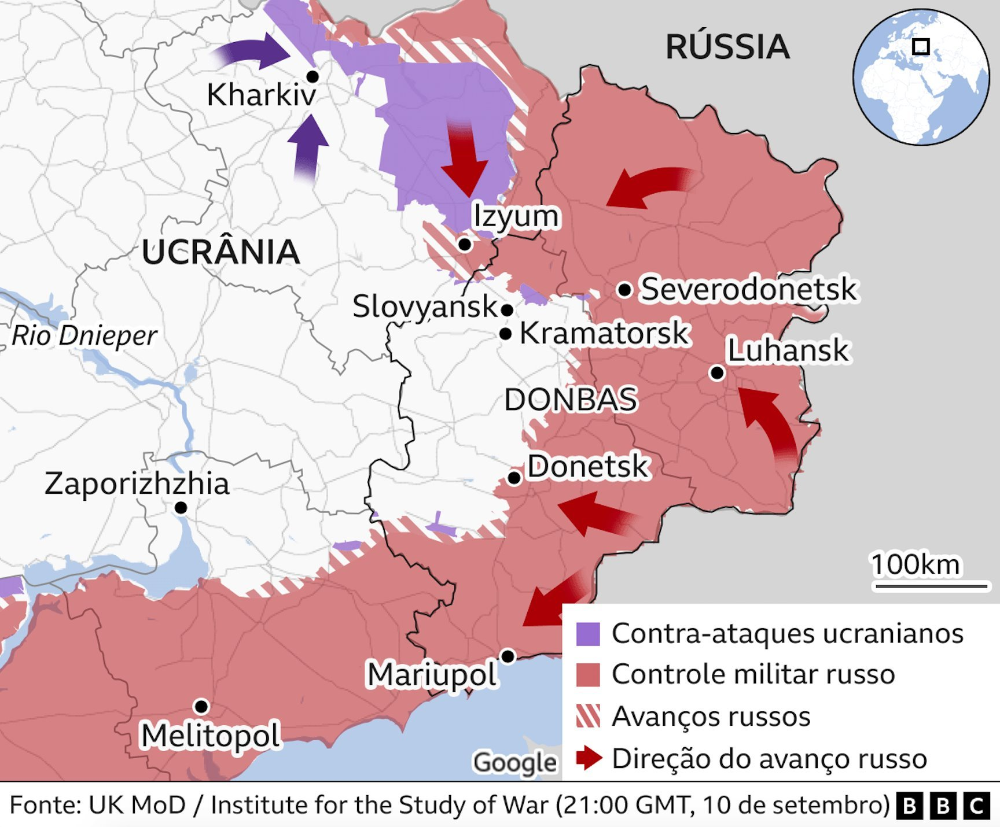

Atualmente, diversos conflitos ao redor do mundo, como as guerras na Ucrânia e no Oriente Médio, além de tensões étnicas e políticas em várias regiões da África e da Ásia, continuam a afetar milhões de pessoas. Compreender a origem desses conflitos exige um olhar atento para os acontecimentos históricos que moldaram as relações entre povos e nações. A história desempenha um papel fundamental na construção da paz, pois permite refletirmos sobre erros e acertos do passado, promovendo o diálogo, a empatia e o respeito mútuo. Ao aprender com os eventos históricos, a sociedade pode buscar soluções mais justas e eficazes para superar desafios e construir um futuro mais pacífico.
Veja alguns confltios atuais aqui
Entenda como a historia pode evitar conflitos aqui